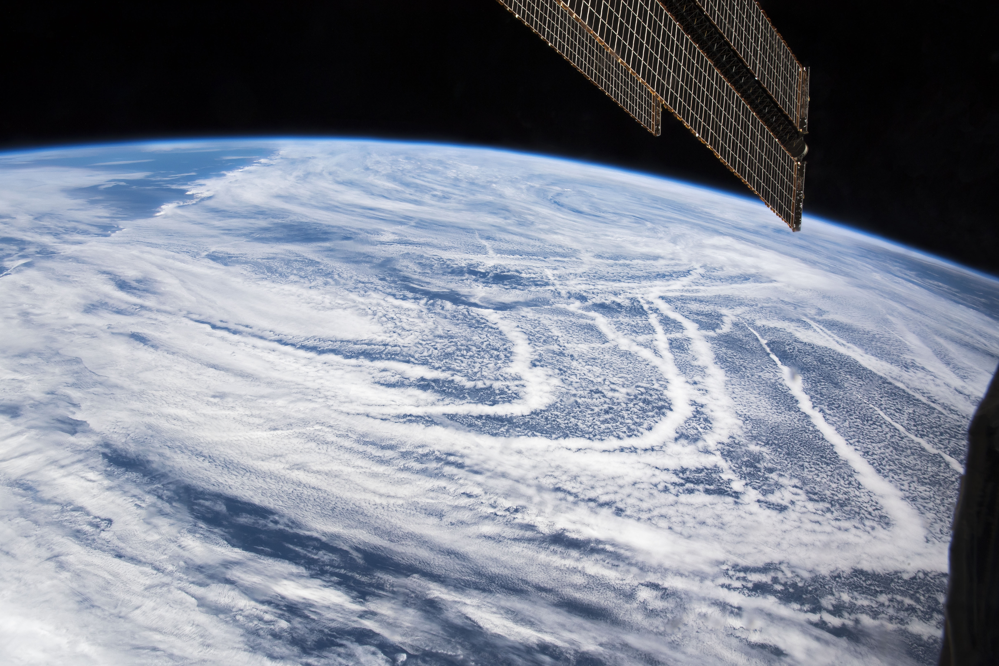
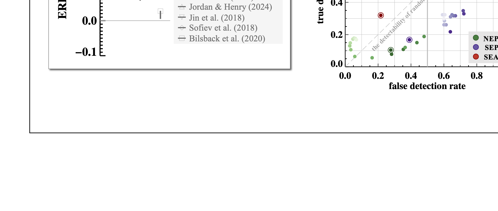

Shipping Emissions & IMO2020 Climate Impact
[Machine Learning ]
Ship tracks, bright, linear clouds trailing ocean-going ships, are great examples or manifestations of cloud adjustment in response to inadvertent aerosol perturbations from shipping emission. Their radiative characteristics in contrast to the surrounding unperturbed scenes offers invaluable insigts into understanding aerosol-cloud-radiation interactions. In this work, I trained ensembles of neural networks to examine how reduced pollution from shipping affects cloud properties and climate, revealing that while the IMO2020 regulation have significant environmental and public health benefits, they also produce a global warming effect of ~0.1 W m-2, equivalent to about 3.5 years of CO2 warming. We concluded even this substantial, abtrupt radiative forcing is challenging to detect, underscoring a key challenge for observing real-world cloud adjustments against cloud natural variability. This study raises concerns about accelerated warming associated with future emission regulations and the detectability of Marine Cloud Brightening (MCB) as a geoengineering proposal.
Related publications: Zhang et al. (2025) Commun. Earth & Environ. [media coverage]

Visible ship tracks and marine clouds as seen from the International Space Station. Linear, bright cloud fields created by sulfur-rich ship exhausts surrounded by less bright clouds. Astronaut photograph ISS059-E-36734. Image credit: Earth Science and Remote Sensing Unit, NASA Johnson Space Center, and NASA Earth Observatory.

(left) Effective radiative forcing estimates of the IMO2020 event from literature are compared to this study which reports the forcing due to changes in the SW cloud radiative effect from the 3 stratocumulus decks. (right) Detectability for changes in cloud radiative effect due to IMO2020. Perfect detectability lies at the upper-left corner (0,1) of the diagram, and a random detectability lies on the 1-to-1 line. Detectability increases from bottom-right to upper-left.